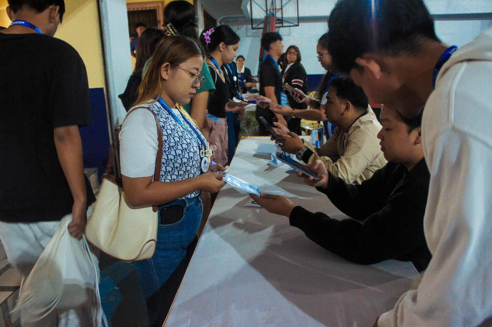
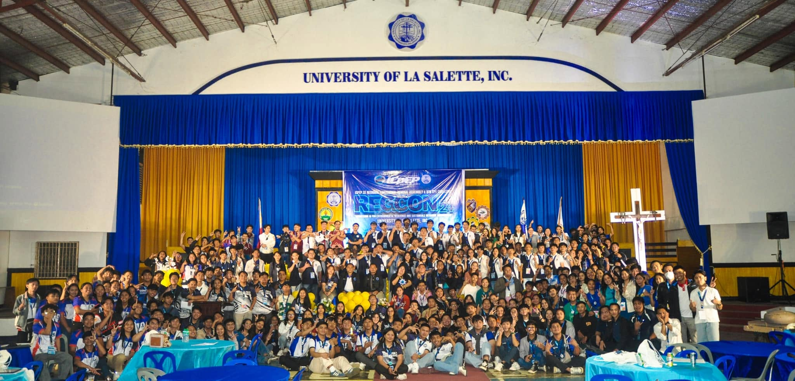
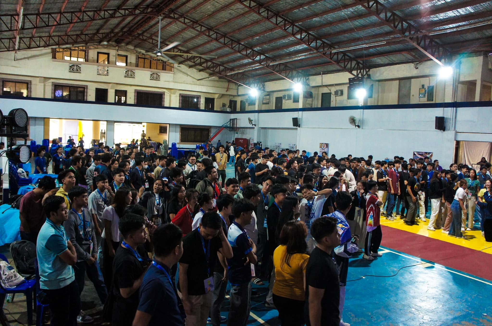

QR-Based Attendance Management System



Designed, developed, and successfully deployed a Python-based QR Code Attendance Management System for the Regional Convention of the Institute of Computer Engineers of the Philippines – Student Edition (ICpEP.SE) 2024, hosted at the University of La Salette, Inc.
The system streamlined event registration and attendance monitoring by utilizing QR code scanning for automated participant identification and attendance recording. It minimized manual encoding, improved check-in efficiency, and provided a more organized approach to managing attendee records during a large-scale academic event.
The project demonstrated the practical application of Python programming and automation in developing reliable, real-world solutions for event management and attendance tracking.